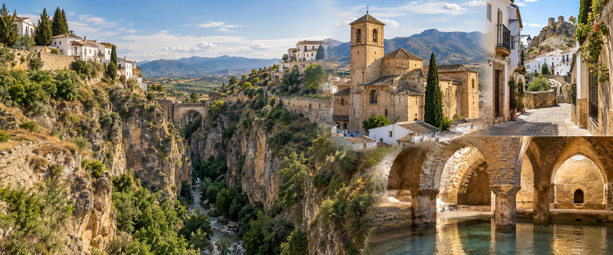

Gebruik bij voorkeur oortjes. Kies de audio bij de halte of zaal waar je bent.

AMIGOS CAMINANTES · NEDERLANDSTALIGE AUDIOGIDS
Luister, kijk en ontdek op je eigen tempo.
Gebruik bij voorkeur oortjes. Kies de audio bij de halte of zaal waar je bent.